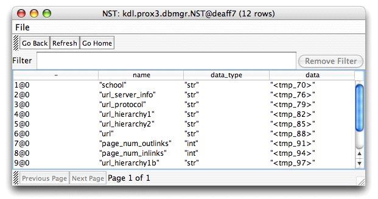
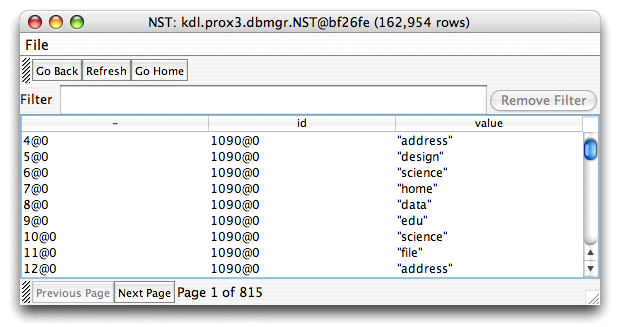
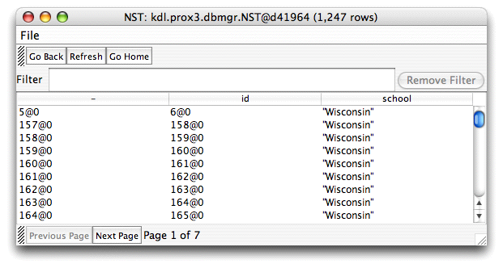
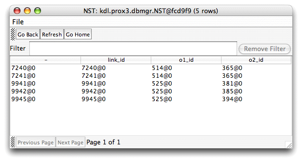

The database engine underlying Proximity, MonetDB, uses a vertically fragmented design. This design stores all data in two-column tables called BATs (binary association tables). All BATs include a head column that contains an identifier (OID) and a tail column that contains data. The contents of the tail can also point to other tables. Thus, rather than the object-centric view provided by familiar relational databases where an entity’s attributes are stored in the columns of a table, Proximity uses separate tables for each attribute. Other tables store the Proximity ID for each object or link in the database. Each attribute value is associated with the appropriate entity through the corresponding ID.
Proximity’s vertically fragmented design makes some database operations more or less efficient than they would be in a traditional relational database. Operations required by common knowledge discovery tasks, such as the joins required for finding subgraphs matching a query, are significantly faster than they would be in a common relational database. Object- and link-centric operations, such as finding all the attribute values for a specified object, are less efficient.
To enable a more intuitive view of the data, Proximity provides an intermediate representation called nested synchronized tables (NSTs) that combines the data from several related BATs into a single, multi-column table. Proximity includes an NST browser for direct examination of these data structures. For many tasks, using NSTs provides the best mechanism for working with data in Proximity databases.
The exercise below illustrates how to use NSTs and filtering to identify objects and links based on attribute values—in this case, to find all links from Wisconsin staff web pages to Wisconsin faculty pages. More specifically, we first identify all the objects that correspond to Wisconsin staff pages (all objects where the value of the school attribute equals Wisconsin and the value of the pagetype attribute equals Staff). We then similarly identify the objects that correspond to Wisconsin faculty pages. Finally, we find all links that originate from an object in the first set and terminate at an object in the second set.
To better understand the NSTs used in this example, the following exercise uses the Proximity interactive Python interpreter rather than a Python script, allowing you to pause to examine the relevant NSTs as you proceed. The exercise begins by exploring the standard Proximity NSTs and illustrating how to use the NST browser features. This is followed by the steps needed to create the NSTs that identify the restricted sets of objects and links listed above.
Exercise 6.7. Finding specific links:
Before beginning, make sure that you are serving the ProxWebKB database using Mserver. Start the Proximity Database Browser if it is not already running.
-
From the Proximity Database Browser start page, click browse tables to browse the built-in Proximity NSTs. Proximity opens the NST browser.

The Proximity NST browser lets you directly examine Proximity data as represented by NSTs. Every Proximity database uses several standard NSTs for storing objects, links, containers, and attributes for these entities. A Proximity database can also have an arbitrary number of user-created NSTs that typically store subsets or joins of existing NSTs. The Proximity NST browser includes a menu bar, top button bar for navigation, filter text box, bottom button bar for paging through long lists, and a large area used to display the data in the selected NST.
The File menu’s single command, Export to File, writes the data for the current NST to a tab-delimited text file for use in other applications. Exported NST data does not include the head column (OIDs), and the trailing
@0is omitted from ID data.The initial NST browser display shows the standard NSTs included in all Proximity databases:
-
The prox_object NST stores the IDs of objects in the database.
-
The prox_obj_attr NST stores the name, data type, and pointers to tables that contain the values for object attributes.
-
The prox_link NST stores the IDs of the links and the IDs of the objects they connect to and from (recall that all links in Proximity are directed).
-
The prox_link_attr NST stores the name, data type, and pointers to tables that contain the values for link attributes.
-
The prox_container NST stores the ID, name, and parent container for all the containers in the database, plus pointers to tables that contain the data (objects, links, and attributes) for those subgraphs.
-
The prox_cont_attr NST stores the name and data type for all the container attributes in the database, plus pointers to tables that contain the values for those attributes
-
-
Double-click prox_object. Proximity displays the NST that stores object IDs.

The
prox_objectNST includes two columns: the head column (labeled “-”), which stores the OIDs for each object, and anidcolumn, which stores the object IDs for each object.The OID is an internal value used by Proximity; the ID is a visible value that you can use to refer to specific objects in the database. Although they are identical in this case, the OID and ID values need not match.
-
Click Go Back and then double-click prox_obj_attr. Proximity displays the NST that stores object attribute data.
 The prox_obj_attr NST includes four columns: the head column, plus columns storing the attribute name, data type, and a
datacolumn that contains a pointer to the table containing the values for this attribute. Each of these attribute value tables is another NST. To see the values for an attribute, double-click the name of the corresponding attribute value table. -
Double-click the name of the attribute value table for the page_num_inlinks attribute (the name may vary but will start with
tmp, e.g., <tmp-94>). Proximity displays the table of values for the page_num_inlinks attribute.
Attribute value tables have three columns: the head column, an
idcolumn that stores the ID of a database entity (object, link, container, or subgraph) and avaluecolumn that stores the value of the attribute for that entity. Note that in this case the values in theidcolumn do not match the OIDs in the head column. -
Click Go Back and then double-click <tmp-100>. Proximity displays the table of values for the page_words_top100 attribute.
 In contrast to the previous attribute NST, the table of values for page_words_top100 contains multiple rows with the same
idvalue. This indicates that page_words_top100 is a set-valued attribute—objects in the database may have multiple values for this attribute. And as we can see in the table shown above, this set can include the same value (e.g., “science”) more than once. Proximity entities may have zero, one, or many values for a specified attribute. Click Go Back and then double-click <tmp-70>. Proximity displays the table of values for the school attribute.
value = "Wisconsin"and press Return.
Filters are a set of conditions that rows in the NST must match. For example, a common use for filters is identifying all objects having a specified attribute value. Filters can be used in Python scripts or entered directly in the NST browser’s Filter text box.
This filter limits the displayed rows to those that have Wisconsin in the value column. The NST browser now shows only the objects that have this attribute value.

Filters specify a set of conditions that rows in the NST must match. You can filter an NST based on values in any of the non-head columns in that NST.
-
If it is not already available, open the interactive Python interpreter by choosing Open Interpreter from the Script menu.
-
In the interactive Python interpreter, enter
wiscPages = DB.getObjects("school = 'Wisconsin'")The
getObjects()method requires a single string argument that specifies the desired filter. Note that because the filter requires a stringvalue,'Wisconsin', it requires single quotes in addition to the double quotes surrounding the complete filter string.Proximity creates an NST named
wiscPagescontaining the same set of objects as those listed in the filtered NST from Step 6.![[Caution]](images/caution.png)
Although filters resemble conditions, they have different semantics. Conditions operate on objects or links whereas filters operate on NST rows. A database entity satisfies a condition only if it has a value for the relevant attribute that satisfies the condition; entities having no value for the attribute cannot satisfy the condition. Filters pass all rows that satisfy the filter.
For example, if some but not all objects have a value for the school attribute, only those objects having a value can satisfy the inequality condition school < > UTexas. In contrast, a similar-looking filter,
school != UTexas, admits any NST row that does not have UTexas as a value. When applied to the full objects NST, both objects having a different value for the school attribute as well as objects having no value pass through the filter.Add
attribute!= nil -
In the interactive Python interpreter, enter
prox.browse(wiscPages)Proximity opens another NST browser window that shows you the contents of the
wiscPagesNST you just created. Although the
wiscPagesNST contains the same information as the filtered school NST, these NSTs are not identical. Specifically, the values in the head column are different across the two NST browser windows. Remember to use the value in theidcolumn, not the OID in the head column, when you need the ID of a database entity.You can also use the
browse()method to examine the standard Proximity NSTs. Use the “shortcuts” to these tables described in “Theproxobject” as the argument tobrowse(). For example, to display the objects NST in a new NST browser window, enterprox.browse(prox.objectNST)Note that the shortcut
prox.objectAttrsreturns anAttributesobject; therefore, to browse one of the standard attribute NSTs use the formprox.browse(prox.objectAttrs.getAttrNST()) -
In the interactive Python interpreter, enter
wiscPages2 = DB.getObjects("school = 'Wisconsin'","pagetype, url") prox.browse(wiscPages2)Proximity creates and displays an NST named wiscPages2 containing columns for the pagetype and url attributes in addition to the head,
id, andvaluecolumns we saw before.
In both of the previous methods of filtering the school attribute, the resulting NST included only the head,
id, andvaluecolumns. We can include additional data in the NST by using an overload of thegetObjects()method that lets us specify which additional columns to include in the resulting NST. This overload requires two string arguments: a filter, and a list of additional columns to be included in the resulting NST. Proximity provides similar overloads for many methods that work with NSTs. -
In the interactive Python in interpreter, enter
wiscPages.describe()1,247 rows, 2 columns [id,school:oid,str] -- in memory
The
describe()method provides summary information about an NST. As was the case for thebrowse()method, use the “shortcut” names to pass one of the standard tables as an argument todescribe(). Remember that the attribute shortcuts return anAttributesobject, not an NST, so you must explicitly get the corresponding NST, for example,prox.objectAttrs.getAttrNST().describe() -
In the interactive interpreter, enter
wiscStaff = DB.getObjects("school = 'Wisconsin' AND pagetype = 'Staff'") prox.browse(wiscStaff)Proximity creates and displays an NST named wiscStaff.

To find the objects that correspond to Wisconsin staff web pages, we need to create a filter that requires matching two conditions: the value of the school attribute must be Wisconsin and the value of the pagetype attribute must be Staff. The filter combines these two conditions with the logical operator
AND.Filter conditions can be combined with
ANDandOR, using infix notation. The filter is passed in as a single string parameter to thegetObjects()method. String values must be quoted; note the single quotes surrounding the required attribute values. For more information about using logical operators in filters, see theFilterFactoryclass.Because the filter used values from both the
schoolandpagetypecolumns, these columns are automatically included in the resulting NST. You can use the overload of thegetObjects()method, described above, to include data from additional columns in the resulting NST. -
In the interactive Python interpreter, enter
wiscFaculty = DB.getObjects("school = 'Wisconsin' AND pagetype = 'Faculty'")This filter combines two conditions to find all the Wisconsin faculty pages. The results are stored in a new NST named wiscFaculty.
Next, we need to find the links from objects in the set of Wisconsin staff pages (wiscStaff) to objects in the set of Wisconsin Faculty pages (wiscFaulty). We begin by getting the standard Proximity links NST.
-
In the interactive Python interpreter, enter
linksNST = prox.linkNSTExamine this NST in the browser by either entering
prox.browse(linksNST)in the interactive Python interpreter or by double-clicking prox_link in the NST browser’s home page.

The links NST has four columns: the head column, the ink IDs (
link_id), and the starting (o1_id) and ending (o2_id) objects for each link.Now we need to identify those links where the starting object is a Wisconsin staff page (the link’s
o1_idvalue must be in the list of IDs from the wiscStaff NST) and the ending object is a Wisconsin faculty page (the link’so2_idvalue must be in the list of IDs from thewiscFacultyNST. -
In the interactive Python interpreter, enter
facOutLinks = linksNST.intersect(wiscStaff, "o1_id = id")This identifies those links where the starting object (
o1_id) is a Wisconsin staff page. That is, the link’so1_idvalue must equal the value ofidfor an object in the wiscStaff NST.Once again, we use a filter to identify the relevant rows in these NSTs. But because we need to match values across two different NSTs, the filter is used as an argument to the
intersect()method. The filter for this instance,o1_id = id, compares the values in linksNST’so1_idcolumn with the values in wiscStaff’sidcolumn.Because these NSTs have unique column names, Proximity knows which NST each column comes from. When both NSTs share a column name that you want to use in a filter, add a prefix indicating which NST it comes from. For example, if both NSTs had an
idcolumn, writeA.idto indicate that this refers to theidcolumn from NST that the method operates on (linksNST) andB.idto indicate that this refers to theidcolumn from the NST passed in as a parameter to theintersect()method (wiscStaff). -
In the interactive Python interpreter, enter
wiscStaffFacLinks = facOutLinks.intersect(wiscFaculty, "o2_id = id")prox.browse(wiscStaffFacLinks)Proximity creates and displays an NST names wiscStaffFacLinks.
 This identifies the links in facOutLinks where the ending object is a Wisconsin faculty page. That is, the link’s
o2_idvalue must equal the value ofidfor an object in the wiscFaculty NST. Because facOutLinks includes only the links beginning at a Wisconsin staff page, the wiscStaffFacLinks NST contains the links we want—links from Wisconsin staff pages to Wisconsin faculty pages. Remember, thelink_idcolumn, not the head column, lists the IDs for the final set of links.